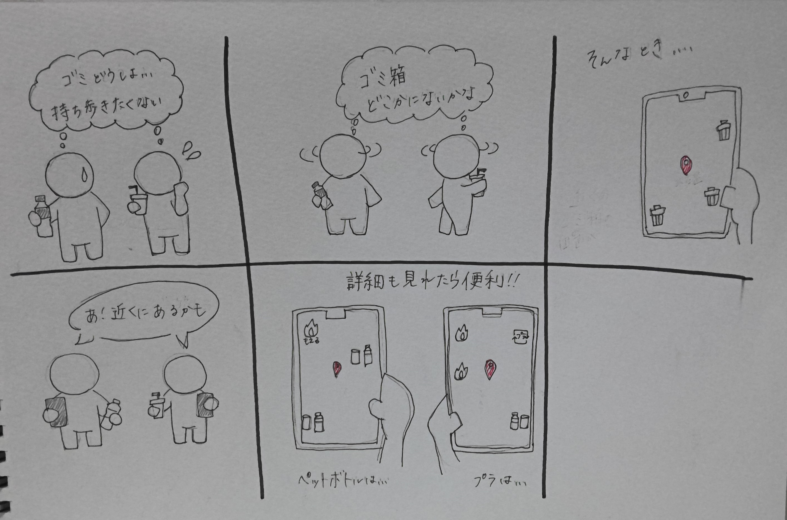

IoTとは何か
IoTとはInternet of Things（モノのインターネット）の略。
今までインターネットに繋がっていなかった様々なモノがインターネットに繋がる仕組みのこと。
IoTで実現できること
- モノを操作する
- モノの状態を知る
- モノの動きを検知する
- モノ同士で通信する
IoTの活用例
スマート家電
離れた場所からでも家電の操作ができたり、ペットの様子が見れたりする。
エアコン、冷蔵庫、照明、スピーカー、防犯カメラなど
スマートロック
外出先からでも鍵の開け閉めができる。鍵の締め忘れや紛失の心配がない。
ハンズフリーに対応しているものもある。
ウェアラブルデバイス
腕時計や指輪などで身体に装着すると、センサーによって身体の動きや心拍数、睡眠状態などが計測できる。
スマートウォッチ、スマートグラスなど
IoTで何ができるか（グループワーク）

・食堂の空き、混み具合
・バスや車の乗降記録（幼児の放置防止！）
・アルバイトで補充するべき商品の把握
・ヘアアイロンの自動温め機能
・ペットのトイレ掃除
・飛行機の荷物の所在
・ゴミ箱の位置、どのくらい溜まっているか
・電車の車両ごとの人口密度
・エレベータの待ち時間
・写真だけで食生活の管理
など
IoTで何ができるか（個人）
ストーリーボード

街中にあるゴミ箱の位置（何が捨てられるかも）がわかったら便利だと考えました。
街中にゴミ箱があることも少ないですが、知らないところにあるのを見つけられたり、大学内で使えたりしたら良いかもと思い、
今後ゴミ箱の数が増えてほしいという願いも込めてストーリーボードにしました。